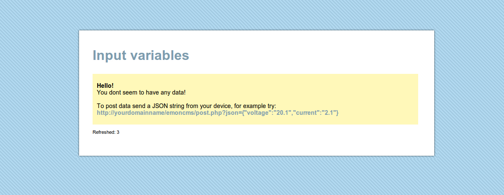
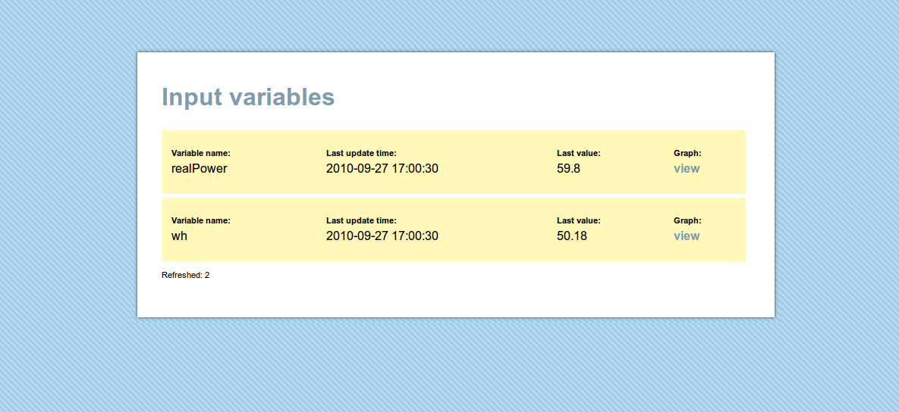
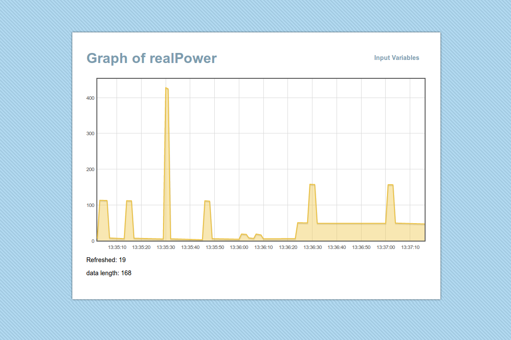

Web Logging and Graphing
First draft created: 27th September 2010
by Trystan Lea
Note: new version of emoncms (v2) can be found here: http://openenergymonitor.org/emon/emoncms
This is a mini guide on how to create a web connected energy monitor and starts from where the guide for building the non-invasive mains AC v3 energy monitor leaves off.
...
JSON and automatic website setup
One of the main features of this implementation is the use of JSON to send data from the arduino to the website. Sending data in a JSON is really nice, I wont go into it in detail here but it makes it possible for the website to automatically setup variables. A simple JSON string looks like this:
{"Voltage":"240.0"}
The website recieves this and if it doesn't already have a Voltage table, will create one and enter the value into the table. This means you can almost configure the website from the arduino, if you want to graph more variables just send them from the arduino and the website should take care of it self.
...
Arduino side
1) Download:
Arduino Sketch (Nuelectronics shield): emonEthernet.tar.gz
Browse software in repository : software repository
2) Open the sketch
- enter energy monitor calibration values as in mains AC v3 guide
- enter arduino ip, gateway ip and server ip
3) Upload the sketch to the arduino
Server side
At the moment this is more of a tech demo than a fully fledged graphing and logging website, Were working on a larger site, more information to come. But for those of you who are learning to program php, ajax, jquery (like me) this might be useful, its also super easy to setup if your not an avid programmer:
1) download: emoncms01.zip
Browse software in repository : software repository
2) unzip into your server directory (can be web based or local computer, search for LAMP server installation guides)
3) Create a database (I use phpmyadmin)
4) Enter the database name, username, password and host into database.config in the emoncms directory
5) Load emoncms in your browser, if you see the following then congratulations! your ready to log and graph! :)

You can at this point try the example data posting link, to see how sending a json string automatically sets up variables on the website.
Or if your energy monitoring arduino is all ready to go and pointing at the website, fire it up and you should see the following variables appear automatically updated in real-time :)

To see a graph of the variable click on Graph:view:

The graphs also update in real-time, using ajax and jquery.
There we are for now, more to come soon!
May be useful to understand how the above works:
Using JQuery AJAX and php to fetch data from a mysql database
Re: emoncms
Placed in forum - software
Re: emoncms
Hello Trystan, in addition to my previous post question (which i really hope you can help me with)
Ive noticed that once the database is created, the script takes care of creating the tables however I have opened the tables with "navicat" and gives me errors on primary key not set, length of primary key etc
$result = mysql_query("CREATE TABLE variables ( name TEXT,accum INT(1))");
$result = mysql_query("CREATE TABLE dump ( text TEXT )");
I believe those lines should include primary key declaration?
is it enough with 2 tables and 3 columns to store all data? or i have something missing?
Thanks for your help, I really hope you can help me out.
Re: emoncms
hi, im trying to setup this easy example to test my new ethernet 28j60. but something is going wrong when setting up the database or website.
instead of your message in the yellow box i am only getting:
"
Refreshed: 2
"
Ive checked the code and in getIndex.php you say
include 'DB.php';
but there is no such file in the dowloaded rar file. might this be the problem?
ive tried to debug by adding a few "echo" of user name password etc and mysqlerror but they dont print anything.
include 'DB.php';
$con = mysql_connect($host,$user,$pass);
$dbs = mysql_select_db($name, $con);
echo "<br".$host;
echo "<br".$user;
echo "<br".$pass;
echo "<br".$name;
echo mysql_error($con);
Re: emoncms
Its been a while since I ran this emoncms version.
But just tested again here and it seems to work. The line
include 'DB.php';
refers to I think an external mysql library, I remember needing it on one computer I was using at the time. I just tried removing the line and it works fine without it.
When you ran the lines:
include 'DB.php';
$con = mysql_connect($host,$user,$pass);
$dbs = mysql_select_db($name, $con);
$lines = file('database.config'); $lines = str_replace(" ", "", $lines); $ex_line = explode(':',$lines[0]); $host = $ex_line[1]; $ex_line = explode(':',$lines[1]); $user = $ex_line[1]; $ex_line = explode(':',$lines[2]); $pass = $ex_line[1];
Re: emoncms
if it worked without the db.php in your directory then ok.
I run this code but i dont get the yellow box as you do.
also, the tables are created but as I said only 2columns in one and 1 column in the other. with no primary key or anything
maybe you know how to add some debug ECHO lines to know whats happening? cause my ECHO shown here dont work.
i know database connection is correct cause tables were created.
$lines = file('database.config');
$lines = str_replace(" ", "", $lines);
$ex_line = explode(':',$lines[0]); $host = $ex_line[1];
$ex_line = explode(':',$lines[1]); $user = $ex_line[1];
$ex_line = explode(':',$lines[2]); $pass = $ex_line[1];
$ex_line = explode(':',$lines[3]); $name = $ex_line[1];
include 'DB.php';
$con = mysql_connect($host,$user,$pass);
$dbs = mysql_select_db($name, $con);
echo "<br".$host;
echo "<br".$user;
echo "<br".$pass;
echo "<br".$name;
echo mysql_error($con);
thanks trystan
Re: emoncms
That should work, the only thing I can see amiss is that your break tags dont have the closing characters />
but I dont think that should affect it.
Is there any reason why your not using the new emoncms version 2?
http://openenergymonitor.org/emon/emoncms
Re: emoncms
Oh i hadnt seen that one !! thanks a lot. It looks like version 2 is working fine when calling an url from my computer browser...GREAT!
btw, when calling the url from the arduino I dont get the feed updated, ive tried both of this methods and they dont work.
ive reduced the apikey for security here in posting. but asume its correct.
method 1
client.print("GET http://mywebsite.com/powermonitor/emoncms2/api/post?apikey=e097a70779b8&json={apparentpower:");
client.print(emon.apparentPower);
client.print("}");
client.println();
method 2
in the following method the serial.print(c) does not print out the "OK", i dont know why.
if (client.connect()) {
Serial.println("Connected2:");
char* urll[] = {"GET http://mywebsite.com/powermonitor/emoncms2/api/post?apikey=e097a7779b8&json={apparentpower:", buffer, "}"};
for (int i = 0; i < 3; i++){ Serial.print(urll[i]); } Serial.println();
for (int i = 0; i < 3; i++){ client.print(urll[i]); } client.println();
}
while (client.available()) {
char c = client.read();
Serial.print(c);
client.flush();
}
client.stop();
thanks a lot Trytan
Re: emoncms
can you help me with this.
every thing is working, but it sends same data every time.
its only sends ones updated data when i reset the arduino and again start sending duplicate data its not updating the new changed values from anologe port.
Re: emoncms
Hay JSON code seems just what im looking for :-)
Planing something similar like the openenergymonitor consept. See:
http://www.arduino.cc/cgi-bin/yabb2/YaBB.pl?num=1289334133
Re: emoncms
the program dont work with original etherShield.h and ethernetShield.ccp, is posible get the library version that has yorr scketch?
Thanks